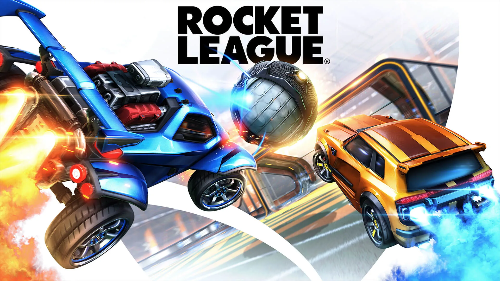

Rocket League is a vehicular soccer video game developed and published by Psyonix. The game was first released for PlayStation 4 and Windows in July 2015, with ports for Xbox One and Nintendo Switch being released later on. In June 2016, 505 Games began distributing a physical retail version for PlayStation 4 and Xbox One, with Warner Bros. Interactive Entertainment taking over those duties by the end of 2017. Versions for macOS and Linux were also released in 2016, but support for their online services were dropped in 2020. The game went free-to-play in September 2020. Described as "soccer, but with rocket-powered cars", Rocket League has up to eight players assigned to each of the two teams, using rocket-powered vehicles to hit a ball into their opponent's goal and score points over the course of a match. The game includes single-player and multiplayer modes that can be played both locally and online, including cross-platform play between all versions. Later updates for the game enabled the ability to modify core rules and added new game modes, including ones based on ice hockey and basketball. Rocket League is a sequel to Psyonix's Supersonic Acrobatic Rocket-Powered Battle-Cars, a 2008 video game for the PlayStation 3. Battle-Cars received mixed reviews and was not a success, but gained a loyal fan base. Psyonix continued to support themselves through contract development work for other studios while looking to develop a sequel. Psyonix began formal development of Rocket League around 2013, refining the gameplay from Battle-Cars to address criticism and fan input. Psyonix also recognized their lack of marketing from Battle-Cars and engaged in both social media and promotions to market the game, including offering the game for free for PlayStation Plus members on release. Rocket League was praised for its gameplay improvements over Supersonic Acrobatic Rocket Powered Battle-Cars, as well as its graphics and overall presentation, although some criticism was directed towards the game's physics engine. The game earned many industry awards and saw over 10 million sales and 40 million players by the beginning of 2018. Rocket League has also been adopted as an esport, with professional players participating through ESL and Major League Gaming along with Psyonix's own Rocket League Championship Series (RLCS).
basically its a soccer game but with cars. different modes include 3v3, 2v2, 1v1, rumble, hoops, snowday, and dropshot. There is also a 4v4 chaos mode in casual but nobody plays it therefore it is irrelevant. there is also a competitive league for tryhards. rokt league rank system is from bronze 1 to Supersonic legend.